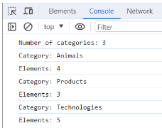

Тема: Класи. Об'єктна модель документа (dom). Події. Об'єкт події. Делегування подій. Throttle. Модульность коду
Мета: придбати практичні навички роботи з об'єктами. Методи об'єкта.. Callback. Стрілочні функції. Стрілочні функції як колбеки. Реалізація програм засовами мови JAVASCRIPT Сценарії на JavaScript, застосовані на сайті інтернет-магазину кави
Завдання:
Натискання на кнопку "SHOW ME" має виводити значення з поля введення у консолі.
У звітному HTML-документі відобразити скрін програмного коду
Кнопка "Приховати" ховає текст , виводячи зірочки замість введеної інформації, замінює назву кнопки на "Розкрити", при повторному натисканні текст знову стає доступним і кнопка набуває початкового вигляду.
У звітному HTML-документі відобразити скрін програмного коду
5. У звітному HTML-документі створити html-розміту, яка складається з наступних елементів :
- текст, з використанням селектора класу (class="taskTitle" ) ,
- div, з використанням селектора ідентифікатора (id="place”)
Додайте слухач кліку на window і визначте чи клікнув користувач у div з id="place".
Примітка: Якщо користувач клікнув на зеленому прямокутнику – у консолі виведе true. У протилежному випадку - false
У звітному HTML-документі відобразити скрін програмного коду
7. HTML містить список категорій ul#categories.
Напиши скрипт, який:
- Порахує і виведе в консоль кількість категорій в ul#categories, тобто елементів li.item.
- Для кожного элемента li.item у списку ul#categories, знайде і виведе в консоль текст заголовку елемента (тегу <h2>) і кількість елементів в категорії (усіх <li>, вкладених в нього).
Для виконання цього завдання потрібно використати метод forEach() і властивості навігації по DOM.
В результаті, в консолі будуть виведені наступні повідомлення.
8. Напиши скрипт управління формою логіна.
1. Обробка відправлення форми form.login-form повинна відбуватися за подією submit.
2. Під час відправлення форми сторінка не повинна перезавантажуватися.
3. Якщо при сабміті у формі є незаповнені поля, виводь alert з попередженням про те, що 'All form fields must be filled in'. Не додавай на інпути атрибут required, валідація має відбуватися саме через JS.
4. Якщо користувач заповнив усі поля і відправив форму, збери значення полів в об'єкт з двома властивостями, де ключ — це ім'я інпутів, а значення — відповідні значення цих інпутів, очищені від пробілів по краях. Для доступу до елементів форми використовуй властивість elements.
5. При сабміті форми виведи об'єкт із введеними даними в консоль і очисти значення полів форми методом reset.
Для генерування випадкового кольору використовуй функцію getRandomHexColor().
Зверни увагу, що функція getRandomHexColor() повертає колір у hex-форматі, в той час як колір фону на
буде у форматі rgb. Це нормально й не потребує якихось правок.10. Напиши скрипт створення й очищення колекції елементів з наступним функціоналом.
Є input, у який користувач вводить бажану кількість елементів.
Після натискання на кнопку Create має рендеритися (додаватися в DOM) колекція з відповідною кількістю елементів і очищатися значення в інпуті.
При повторному натисканні на кнопку Create поверх старої колекції має рендеритись нова.
Після натискання на кнопку Destroy колекція елементів має очищатися.
Після натискання користувачем на кнопку Create треба провалідувати значення в input, воно має бути в межах від 1 до 100 включно. Тільки якщо воно задоволяє умову, мають додаватися нові
Для рендеру елементів на сторінці створи функцію createBoxes(amount), яка приймає один параметр — число, що зберігає кількість елементів для рендеру.
Функція має створювати стільки
1. Розміри першого <div> елемента мають бути 30px на 30px.
2. Кожен наступний елемент повинен бути ширшим і вищим від попереднього на 10px.
3. Усі елементи повинні мати випадковий колір фону. Використовуй готову функцію getRandomHexColor() для отримання випадкового кольору.
Для очищення колекції після натискання на кнопку Destroy створи функцію destroyBoxes(), яка очищає вміст div#boxes, у такий спосіб видаляючи всі створені елементи.
Сценарії на JavaScript, застосовані у власному сайті
Перейти